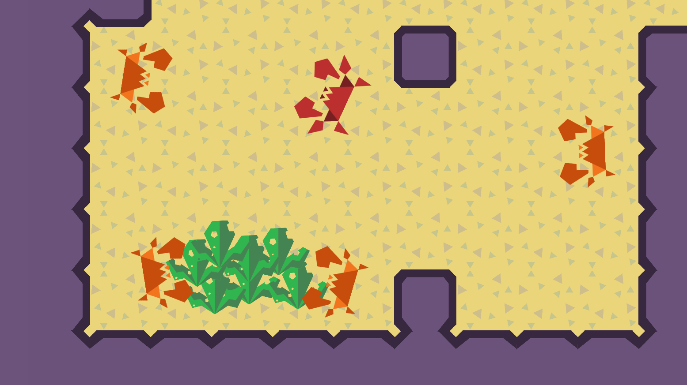

Crab life: Algae Bandit
UnityC#GitHub

Game Description
Sneak your way through every level to eat all the algae and fight any crabs in the way. In Crab Life, you play as a lone bandit crab who has been rejected by society. Instead of being a decent crab, you take revenge on society by stealing algae from others.Playing as a crab can be weird if it's your first time! As a crab, you move faster sideways rather than moving forward. We made the crab face 90 degrees so that you could use W to move sideways while using A and D to turn. Be careful on how you position yourself, your back is exposed to attack. Be aware of the green bar since that is your block stamina. In order to win, you must collect all the algae in the level. The counter on the top right will tell you how much you have left.

Overview
A couple of friends from the SJSU Game Dev Club and I made a video game using Unity over the summer of 2020. Our team consisted of a producer and sound designer, an animator and artist, a designer, and two programmers. During this project, I programmed the combat system, using C#, for the player crab and enemy crabs. I also assisted in coordinating with the artist and designer to implement sound and animation into the game. The game is posted on itch.io and free to play!
